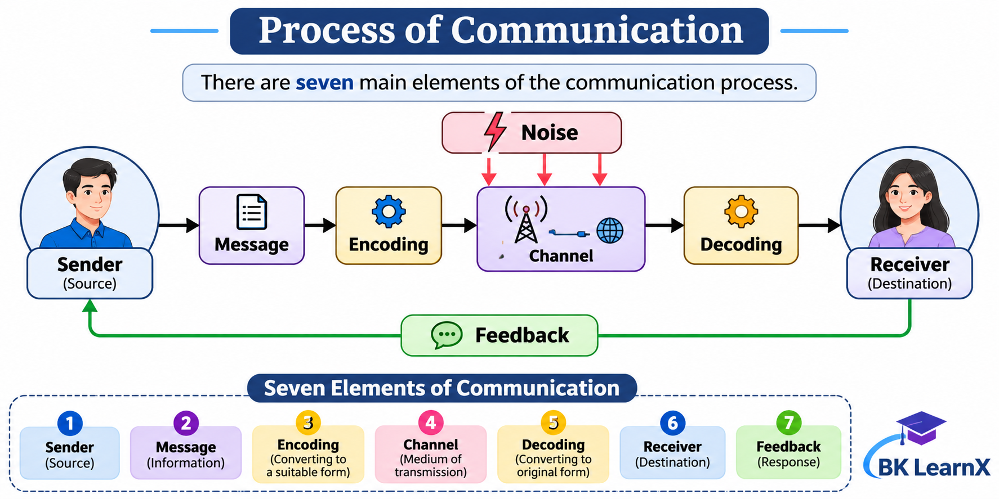

Soft Skill Top 30 Questions
Q1. What is Communication? Explain its process, importance and
objectives.
Communication
Communication is the process of sharing information, ideas, thoughts,
feelings and messages between two or more people through speaking,
writing, signs or gestures.
Communication is an important part of human life. Every person needs
communication to share information, express feelings, exchange ideas and
understand others. We communicate with our family members, friends,
teachers and other people in our daily life
Process of Communication
The communication process is a method through which information moves
from one person to another. It includes different steps that help the
sender deliver a message and the receiver understand it.
There are seven main elements of the communication process.

-
Sender
The sender is the person who starts the
communication process. The sender has an idea, thought or information
that they want to share with another person.
The sender decides
what message should be sent and to whom it should be sent.
-
Message
A message is the information, idea, thought or
feeling that the sender wants to share with the receiver.
A message can be in the form of spoken words, written text, pictures,
signs or symbols. The message should be clear and meaningful.
-
Encoding
Encoding is the process of changing thoughts and
ideas into words, signs, symbols or gestures so that another person
can understand them.
The sender selects suitable words and
language to prepare the message. Good encoding makes communication
clear and easy.
-
Channel
A channel is the medium or way through which a
message is sent from the sender to the receiver.
Different
channels are used for different purposes. The sender should choose a
suitable channel to make communication effective.
Examples
- Telephone
- Email
- Letters
- Face to Face
- Mobile message
- Video calls
-
Decoding
Decoding is the process of understanding and
interpreting the message received from the sender.
The receiver
tries to understand the meaning of the words, signs or symbols used in
the message. Correct decoding is necessary for effective
communication.
-
Sender
The receiver is the person who receives the message
sent by the sender. The receiver listens, reads or observes the
message carefully.
Communication becomes successful when the
receiver gets the message properly.
-
Feedback/Response
Feedback is the response or reply given
by the receiver after receiving and understanding the message.
It
helps the sender know whether the receiver has understood the message
correctly or not. Feedback also makes communication a two-way process.
Importance of Communication
The main importance of communication is explained below:
-
Building Relationships
Communication helps people share
important information and knowledge with others. It allows students,
teachers and employees to exchange ideas and learn new things.
-
Better Understanding
Good communication helps people
understand each other's thoughts, feelings and opinions. It reduces
confusion and misunderstandings between people.
-
Building Relationships
Communication helps people develop
strong and healthy relationships. Regular and clear communication
creates trust, respect and cooperation among people.
-
Teamwork
In an organization, people work together to
complete different tasks. Good communication helps team members share
ideas, discuss problems and complete their work successfully.
-
Decision Making
Communication provides the information
needed to make correct decisions. People can discuss different ideas
and select the best solution to a problem.
-
Problem Solving
Many problems happen because of a lack of
communication. Effective communication helps people discuss problems,
understand their causes and find suitable solutions.
-
Professional Growth
Good communication skills are
important for getting a job and developing a career. They help
employees speak confidently, attend interviews and work effectively in
an organization.
-
Improving Confidence
When people communicate clearly, they
become more confident in expressing their ideas. It also improves
their speaking skills and ability to interact with others.
Objectives of Communication
The important objectives are explained below:
-
To inform
The first objective of communication is to
provide information to others. People communicate to share news,
facts, instructions and important details.
Example:A college informs students about examination dates
through a notice.
-
To Educate
Communication helps people gain knowledge and
learn new skills. Teachers, trainers and experts use communication to
explain different topics.
Example: A teacher explains computer programming to students.
-
To Persuade
Persuasion means convincing someone to accept
an idea, opinion or suggestion. Communication is used to influence the
thinking and decisions of other people.
Example:A salesperson explains the benefits of a product to a
customer.
-
To Motivate
Communication helps encourage people to work
hard and achieve their goals. Motivational words and positive messages
increase confidence and interest.
Example: A teacher motivates students to perform better in
examinations.
-
To Instruct
Communication is used to give directions,
orders and instructions to other people. Clear instructions help
people understand what they have to do.
Example:A manager gives work instructions to employees.
Q2. Explain Verbal and Non-Verbal Communication with Their Types and
Examples.
Communication
See Question 1
On this basis, communication is mainly divided into two important types:
- Verbal
- Non-Verbal
Verbal Communication
Verbal communication is a type of communication in which people use
words to exchange information, ideas, thoughts, and feelings. It can be
done through speaking or writing.
Types of Verbal Communication
Verbal communication is mainly divided into two types:
-
Oral Communication
Oral communication is a type of verbal
communication in which people exchange information by speaking and
listening.
It is one of the most common methods of communication.
It allows people to share their ideas quickly and receive an immediate
response.
Examples:
- Face-to-face conversation between two people.
- Classroom teaching by a teacher.
- Telephone conversations.
- Group discussions and meetings.
- Interviews between an employer and a candidate.
- Speeches and presentations.
-
Written Communication
Written communication is a type of
verbal communication in which information is shared through written
words. It is used to send messages that can be read and understood by
others.
Written communication is very useful in schools,
colleges, offices, and businesses. It also provides a written record
of information.
Examples:
- Letters and applications.
- Emails and text messages.
- Notices and circulars.
- Reports and documents.
- Books, newspapers, and articles.
- Job applications and resumes.
Non-Verbal Communication
Non-verbal communication is a type of communication in which people
exchange information without using spoken or written words. It is
expressed through body movements, facial expressions, gestures, posture,
eye contact, and other physical actions
Non-verbal communication
helps us understand the feelings, emotions, and attitudes of other
people. Sometimes a person's body language communicates more than their
words.
For Example: smiling shows happiness, shaking the head may show
disagreement, and maintaining eye contact can show attention and
confidence.
Types of Non-Verbal Communication
-
Facial Expressions
Facial expressions are movements of the
face that show different emotions and feelings.
For example,
smiling shows happiness, crying shows sadness, and frowning may show
anger or worry.
Facial expressions help people understand the emotional condition of
others without speaking.
-
Gestures
Gestures are movements of hands, arms, or other
body parts used to communicate a message.
For example,waving a hand means saying goodbye,
raising a hand means asking a
question, and giving a thumbs-up can show approval.
Gestures make
communication more effective and easier to understand.
-
Eye Contact
Eye contact means looking at another person's
eyes during communication.
Good eye contact shows confidence,
interest, attention, and honesty. During an interview or presentation,
proper eye contact creates a positive impression.
-
Body Posture
Body posture refers to the way a person sits,
stands, or moves their body.
A straight and relaxed posture shows confidence and alertness.On the
other hand, a bent posture may show tiredness or a lack of
confidence.
Good body posture is important during interviews,
meetings, and presentations.
-
Body Movement
Body movement includes the movement of
different parts of the body while communicating.
For example,
nodding the head shows agreement, moving hands while explaining
something can support a message, and turning away may show a lack of
interest.
-
Appearance
Appearance means the way a person looks,
dresses, and maintains personal cleanliness.
Clean and
professional clothing creates a good impression. In professional life,
proper appearance is important during job interviews, meetings, and
office activities.
-
Space and Distance
Space and distance refer to the
physical distance people maintain while communicating with each
other.
For example, friends may stand close while talking,
whereas people usually maintain more distance during formal
meetings.
Maintaining proper distance shows respect for personal
space.
Q3. What is Written Communication? Explain its different forms.
Written Communication
See Question 2
Different Forms of Written Communication
-
Letters
A letter is a written message sent from one person
or organization to another person or organization. Letters are
commonly used for personal, official, and business purposes.
There are two main types of letters:
-
Formal Letters: These letters are written for official or
professional purposes. They follow a proper format and use polite
language. Examples include job application letters, complaint
letters, and request letters.
-
Informal Letters: These letters are written to friends,
family members, and relatives. They use simple and friendly
language.
-
Emails
Email stands for Electronic Mail. It is a method of
sending written messages through the internet using a computer or
mobile phone.
Emails are commonly used in offices, colleges,
businesses, and other organizations. They allow people to send
messages, documents, photographs, and other files quickly.
-
Notices
A notice is a short written announcement used to
provide important information to a group of people. It is generally
displayed on notice boards or shared through digital platforms.
Notices
are commonly used in schools, colleges, offices, and government
organizations.
Example: A college notice informing students about
examination dates, holidays, or annual functions.
-
Reports
A report is a written document that provides
information about a particular event, activity, situation, or
subject.
Reports are usually prepared after collecting and
studying relevant information. They help people understand facts and
make decisions.
Example: A student preparing a report about a
college event or an employee preparing a monthly work report.
-
Applications
An application is a formal written request
made to a person or an authority for a particular purpose.
Applications
are used in educational institutions, offices, companies, and
government departments.
Examples
- Leave application to the principal.
- Job application to a company.
- Application for a scholarship.
- Application for a character certificate.
-
Memorandum (Memo)
A memorandum, commonly called a memo, is
a short written message used for official communication within an
organization.
It is generally used to share information, instructions, reminders,
and important announcements among employees.
Example: A manager sending a memo to employees about a change in
office timing.
-
Circulars
A circular is a written message sent to many
people at the same time to communicate common information or
instructions.
It is commonly used by schools, colleges, companies, and government
departments.
Example: A college issuing a circular to all
students about a sports competition or examination rules.
-
Text Messages
Text messages are short written messages
sent through mobile phones or messaging applications.
They are useful for quick and simple communication. People use them to
share information, reminders, instructions, and personal messages.
Example:
A teacher sending a message to students about a change in class
timing.
-
Books, Newspapers, and Articles
Books, newspapers, and articles are also important forms of written
communication. They provide knowledge, information, news, and opinions
to readers.
They are used for education, entertainment,
awareness, and sharing information with a large number of people.
Examples:
Reading a newspaper to learn about current events or reading a
textbook to understand a subject.
Q4. What are the different barriers to communication? Explain Personal,
Organizational, Physical and Semantic barriers.
Barriers to communication
Barriers to communication are obstacles or problems that prevent people
from sending, receiving, or understanding a message correctly.
In
simple words, anything that creates difficulty in communication is
called a communication barrier.
Example: If a teacher explains a
topic but students cannot hear properly because of loud noise, it is a
communication barrier.
Different Types of Barriers to Communication
The four important barriers discussed in this question are:
- Personal Barriers
- Organizational Barriers
- Physical Barriers
- Semantic Barriers
-
Personal Barriers
Personal barriers are obstacles that
occur because of an individual's personal feelings, attitude,
emotions, behaviour, knowledge, or lack of confidence.
Every
person has different thoughts, opinions, habits, and ways of
understanding information. These differences can create problems
during communication.
Main Causes of Personal Barriers:
-
Lack of Confidence
Some people feel nervous or afraid while speaking in front of
others. Due to a lack of confidence, they cannot express their
thoughts properly.
For example, a student may know the answer
but feel afraid to speak in front of the class.
-
Fear and Anxiety
Fear and anxiety can affect a person's ability to communicate. A
person may forget important information or become confused while
speaking.
For example, a candidate may feel nervous during a
job interview and fail to answer simple questions.
-
Poor Listening Habits
Sometimes people do not listen
carefully when others are speaking. They may become distracted or
think about something else.
As a result, they may
misunderstand the message or miss important information.
-
Lack of Knowledge
If a person does not have enough
knowledge about a particular topic, it becomes difficult to
understand or explain the message correctly.
Example: A
student who does not understand a technical subject may find it
difficult to discuss that topic with a teacher.
-
Organizational Barriers
Organizational barriers are
problems that occur because of the structure, rules, policies,
management system, or working environment of an organization.
In
an organization, communication takes place between managers,
employees, departments, and different levels of management. If the
communication system is not proper, information may not reach the
right person at the right time.
Main Causes of Organizational Barriers:
-
Complex Organizational Structure
In some
organizations, there are many levels of management. Information
has to pass through several people before reaching the final
receiver.
This process can create delays and sometimes change
the actual meaning of the message.
-
Lack of Proper Communication Channels
Every
organization needs proper methods for sharing information. If
employees do not know whom to contact or which method to use,
communication becomes difficult.
For example, an employee may
not know whether to send an important request to the manager or
the HR department.
-
Strict Rules and Policies
Sometimes organizations have
very strict rules that prevent employees from sharing their
opinions freely.
Employees may feel uncomfortable asking
questions or giving suggestions to senior officers.
-
Lack of Coordination
When different departments do not
share information properly, their work may be affected.
For
example, if the sales department does not inform the production
department about customer demand, the company may face problems.
-
Poor Management
If managers do not provide clear
instructions or proper information to employees, mistakes can
occur.
Good management is necessary for smooth communication
within an organization.
-
Physical Barriers
Physical barriers are obstacles in the
surrounding environment that create difficulty in sending or receiving
messages.
These barriers are generally related to distance,
noise, place, equipment, and environmental conditions.
Main Causes of Physical Barriers:
-
Noise
Noise is one of the most common physical
barriers. Loud sounds from traffic, machines, construction work,
or other people can disturb communication.
For example,
students may not hear the teacher properly because of loud noise
outside the classroom.
-
Long Distance
When two people are located far away
from each other, direct communication becomes difficult.
They
may need to use telephones, emails, or video calls to communicate.
-
Poor Network Connection
Weak internet signals or
mobile network problems can interrupt online communication.
For
example, during an online meeting, a poor internet connection may
cause voice breaks or video interruptions.
-
Faulty Equipment
Damaged microphones, speakers,
computers, and telephones can create communication problems.
For
example, if a microphone does not work during a presentation, the
audience may not hear the speaker clearly.
-
Environmental Conditions
Poor lighting, extreme
temperature, uncomfortable seating, and crowded places can also
affect communication.
For example, students may find it
difficult to concentrate on a lecture in a very hot and
uncomfortable classroom.
-
Semantic Barriers
Semantic barriers are problems that occur when the sender and receiver
do not understand the same meaning of words, symbols, signs, or
sentences.
The word "semantic" is related to the meaning of
language and words. These barriers usually occur because of difficult
vocabulary, different languages, technical terms, and unclear
messages.
Main Causes of Semantic Barriers:
-
Different Languages
People who speak different
languages may find it difficult to understand each other.
For
example, a person who speaks only Hindi may face difficulty
understanding instructions given only in English.
-
Difficult Words
Using complicated or unfamiliar words
can confuse the receiver.
For example, if a teacher uses too
many difficult technical words while teaching beginners, students
may not understand the topic.
-
Technical Jargon
Technical jargon means special words
used in a particular profession or field.
For example, a
computer engineer may use technical terms that a person without
computer knowledge cannot easily understand.
-
Different Meanings of Words
Sometimes the same word
may have different meanings in different situations. This can
create confusion between the sender and receiver.
For
example, the word "right" can mean a correct answer or a
direction.
-
Unclear Sentences
If a message is incomplete,
confusing, or poorly structured, the receiver may understand it
incorrectly.
For example, unclear instructions from a manager
may cause employees to perform a task incorrectly.
Q5. How Can Communication Barriers Be Overcome? Explain the Methods.
Introduction
See Question 4
Methods to Overcome Communication Barriers
-
Use Simple and Clear Language
The sender should use
simple, clear and easy words while communicating. Difficult words,
technical terms and confusing sentences should be avoided.
Example:
A teacher should explain a difficult topic using simple English so
that every student can understand it.
-
Develop Good Listening Skills
Listening carefully is one
of the most important methods of overcoming communication barriers.
The receiver should pay full attention to the speaker and avoid
unnecessary interruptions.
Example: During a classroom lecture,
students should listen carefully and ask questions if they do not
understand anything.
-
Provide Proper Feedback
Feedback helps the sender
understand whether the receiver has understood the message correctly.
The receiver should ask questions or repeat important information when
necessary.
Example: After giving instructions, a manager can ask
employees whether they have understood the work properly.
-
Avoid Noise and Disturbances
Noise is a physical barrier
that affects communication. Communication should take place in a quiet
and comfortable environment. Mobile phones and other unnecessary
disturbances should be avoided.
Example: Meetings should be
conducted in a quiet room so that everyone can hear and understand the
discussion.
-
Improve Body Language
Non-verbal communication plays an
important role in communication. Proper eye contact, facial
expressions, gestures and body posture help make communication more
effective.
Example: During an interview, a candidate should
maintain proper eye contact and sit confidently.
-
Build Confidence
Fear, nervousness and lack of confidence
can create personal barriers. A person should practise speaking,
participate in group discussions and develop self-confidence.
Example:
A student can improve speaking confidence by participating in
classroom presentations.
-
Choose the Right Communication Method
The sender should
select a suitable method according to the message and situation.
Important information may be communicated through written documents,
emails or official notices.
Example: An organization should send
official instructions through email instead of depending only on
verbal communication.
-
Encourage Open Communication
People should be given
opportunities to express their ideas, opinions and problems without
fear. A friendly and supportive environment improves communication.
Example:
A manager should allow employees to share their suggestions and
discuss workplace problems freely.
-
Understand Cultural and Language Differences
People may
belong to different cultures and speak different languages. We should
respect their differences and use words that are easily understood by
everyone.
Example: In a meeting with people from different
regions, the speaker should use a common language understood by all
participants.
-
Use Proper Communication Tools
Modern communication tools
such as mobile phones, emails, video conferencing and messaging
applications help people communicate over long distances.
Example:
Employees working in different cities can communicate through video
conferencing.
Importance of Overcoming Communication Barriers
Overcoming communication barriers provides several benefits:
- It improves understanding between people.
- It reduces confusion and misunderstandings.
- It increases confidence and cooperation.
- It improves teamwork and productivity.
- It helps in making better decisions.
- It creates good personal and professional relationships.
- It saves time and reduces mistakes.
Q6. Explain Modern Tools of Communication with Examples.
Modern Tools of communication
Modern tools of communication are electronic devices, applications and
technologies used to exchange information quickly and easily. These
tools help people communicate with others over short and long
distances.
Modern communication tools save time, reduce
communication costs and make the exchange of information faster. They
are widely used in education, business, offices and daily life.
Different Modern Tools of Communication
-
Mobile Phones
Mobile phones are one of the most commonly
used tools of modern communication. They allow people to make voice
calls, send messages, share pictures and access the internet.
Example:
A student can call a teacher to ask about examination details.
-
Email (Electronic Mail)
Email is a method of sending and
receiving messages through the internet. It is commonly used for
official communication, job applications, sharing documents and
business purposes.
Example: A student can send their resume to a
company through email while applying for a job.
-
Internet
The internet is a worldwide network that connects
computers and other devices. It allows people to access information,
communicate and share data from anywhere in the world.
Example:
Students can use the internet to attend online classes and search for
study materials.
-
Social Media
Social media platforms allow users to
communicate, share information, upload photos and videos, and interact
with other people.
Examples of social media platforms include
Facebook, Instagram, WhatsApp and LinkedIn.
Example: A company
can use Instagram to share information about its products and
services.
-
Video Conferencing
Video conferencing allows two or more
people to communicate through live audio and video over the internet.
It is useful for online meetings, interviews and distance learning.
Examples
include Google Meet, Zoom and Microsoft Teams.
Example: A company
can conduct an online interview with a candidate living in another
city.
-
Instant Messaging
Instant messaging allows users to send
and receive text messages, images, videos and documents instantly
through the internet.
Examples include WhatsApp, Telegram and
Messenger.
-
Websites and Blogs
Websites and blogs are online platforms
used to publish and share information with people. They provide
educational, business, technical and general information.
Example:
Students can visit an educational website to read notes and practise
examination questions.
-
Television and Radio
Television and radio are electronic
mass communication tools used to provide news, education,
entertainment and important announcements to a large number of
people.
Example: People can watch news on television to get
information about current events.
-
Video Sharing Platforms
Video sharing platforms allow
users to upload, watch and share videos through the internet. They are
useful for education, entertainment and knowledge sharing.
Examples
include YouTube and Vimeo.
-
Online Collaboration Tools
Online collaboration tools help
people work together, share files and manage projects even when they
are in different locations.
Examples include Google Docs, Google
Drive and Microsoft Teams.
Advantages of Modern Tools of Communication
-
Fast Communication: Information can be shared within seconds.
-
Global Connectivity: People can communicate across the world.
-
Time Saving: Online communication reduces the need for physical
meetings.
-
Low Cost: Many communication services are available at a low
cost.
-
Easy Information Sharing: Users can share documents, images,
audio and videos.
-
Educational Benefits: Students can attend online classes and
access study materials.
-
Business Growth: Companies can communicate with customers and
promote their products.
Q7. What Are the Main Purposes of Professional Communication? Explain.
Main Purposes of Professional Communication
-
To Share Information
The main purpose of professional communication is to share important
information with employees, customers and other people. It helps
everyone understand their responsibilities, activities and
work-related updates.
Example: A manager sends an email to employees about a new company
policy.
-
To Give Instructions and Directions
Professional communication is used to provide instructions and
directions so that employees can perform their work correctly. Clear
instructions reduce confusion and mistakes.
Example: A team leader explains the steps required to complete a
project.
-
To Build Professional Relationships
Good communication helps develop trust, respect and cooperation among
employees, managers, customers and clients. It creates a positive
working environment.
Example: Employees communicate politely with their colleagues and
customers.
-
To Improve Teamwork and Cooperation
Professional communication allows team members to share ideas, discuss
problems and work together. It improves coordination and helps
complete tasks successfully.
Example: Team members discuss their responsibilities during a project
meeting.
-
To Solve Problems
Communication helps identify problems, discuss possible solutions and
make suitable decisions. It allows people to express their
difficulties and receive guidance.
Example: An employee discusses a technical problem with the IT
department to find a solution.
-
To Make Better Decisions
Managers and employees exchange information and opinions before making
important decisions. Proper communication helps them understand
different situations and choose the best option.
Example: A company manager discusses sales reports with the team
before making a business decision.
-
To Motivate Employees
Professional communication encourages employees to perform better.
Appreciation, feedback and guidance increase confidence and improve
work performance.
Example: A manager appreciates an employee for completing a project
successfully.
-
To Maintain Records
Written professional communication helps maintain official records of
decisions, instructions, meetings and important activities. These
records can be used for future reference.
Example: An organization maintains meeting minutes, reports and
official emails.
-
To Provide Feedback
Feedback helps employees understand their performance, identify
mistakes and improve their skills. It also helps managers understand
employees' needs and opinions.
Example: A supervisor provides feedback to an employee after reviewing
their work.
-
To Achieve Organizational Goals
Professional communication ensures that employees understand the
organization's objectives and work in the right direction. It improves
coordination, productivity and overall performance.
Example: Different departments communicate with each other to complete
a company project on time.
Q8. Explain the Importance of Effective Communication in Professional Life.
Introduction of Communication
See Question 1
Importance of Effective Communication in Professional Life
- Improves Work Efficiency
Effective communication helps employees understand their duties and
responsibilities clearly. It reduces confusion and allows them to complete their work correctly and on
time.
Example: A manager explains the work requirements clearly so that employees can complete
their tasks without mistakes.
- Develops Good Professional Relationships
Good communication builds trust, respect and
understanding among employees, managers and customers. It creates a healthy and positive working
environment.
Example: Employees who communicate politely with their colleagues can develop better
professional relationships.
- Improves Teamwork
Effective communication helps employees understand their duties and
responsibilities clearly. It reduces confusion and allows them to complete their work correctly and on
time.
Example: A manager explains the work requirements clearly so that employees can complete their
tasks without
mistakes.
- Reduces Misunderstandings
Good communication builds trust, respect and understanding among
employees, managers and customers. It creates a healthy and positive working environment.
Example:
Employees who communicate politely with their colleagues can develop better professional
relationships.
- Helps in Problem-Solving
Communication helps team members share ideas, discuss problems and
work
together. It improves cooperation and coordination among employees.
Example: Team members discuss
their responsibilities before starting a project.
- Increases Confidence
Clear communication reduces confusion and misunderstandings in the
workplace. It ensures that everyone receives the correct information.
Example: A supervisor gives
clear instructions to employees to avoid mistakes during a task.
- Improves Decision-Making
Effective communication allows employees to explain their problems
and
discuss possible solutions. It helps organizations solve workplace issues quickly.
Example: An employee reports a technical problem to the IT department to get it resolved.
- Increases Employee Motivation
Positive communication, appreciation and constructive feedback
encourage employees to perform better. It increases their confidence and job satisfaction.
Example: A
manager appreciates an employee for completing an important project successfully.
- Improves Customer Satisfaction
Professional communication helps employees understand customer
needs, answer questions and solve complaints. It creates a good impression of the organization.
Example: A customer care executive politely listens to a customer's problem and provides a suitable
solution.
- Helps in Career Growth
Good communication skills are important for interviews, presentations,
meetings and leadership roles. They help individuals create better career opportunities and achieve
professional success.
Example: A candidate with good communication skills can explain their knowledge and experience
confidently
during a job interview.
Characteristics of Effective Communication
- Clarity: The message should be clear and easy to understand.
- Completeness: All necessary information should be included.
- Correctness: The information should be accurate.
- Conciseness: The message should be short and meaningful.
- Courtesy: Communication should be polite and respectful.
- Feedback: The receiver should be able to respond to the message.
Extra Topics
Formal communication
Formal communication is the official exchange of information, ideas and messages within an organization
through proper channels and established rules. It follows the organizational structure and hierarchy. It is
used to share official instructions, notices, reports and decisions between employees, managers and
departments in a professional and systematic manner.
Examples of Formal Communication:
- Sending an official email to a manager.
- Writing an application for leave.
- Issuing an official notice to employees.
- Preparing a business report.
- Conducting an official meeting.
- Sending a business letter to a client.
- Giving official instructions to employees.
- Submitting a project report to a teacher.
- Sending a job application to a company.
Informal Communication
Informal communication is the unofficial exchange of information, ideas and thoughts between people without
following formal rules or organizational channels. It usually takes place through casual conversations and
friendly interactions. It helps develop personal relationships, improve social connections and share
information quickly among friends, colleagues and employees.
Examples of Informal Communication:
- Talking with friends during lunch.
- Casual conversation with colleagues.
- Chatting with coworkers during office breaks.
- Sharing personal experiences with friends.
- Discussing weekend plans with colleagues.
- Talking with classmates about examinations.
- Sharing information through casual WhatsApp messages.
- Friendly conversations between employees.
Difference Between Formal and Informal Communication
| Formal Communication |
Informal Communication |
| 1. Formal communication is the official exchange of information in an organization. |
1. Informal communication is the unofficial exchange of information between people. |
| 2. It follows established organizational rules, procedures and communication channels. |
2. It does not follow fixed organizational rules or official communication channels. |
| 3. It takes place between employees through the proper organizational structure. |
3. It takes place freely between friends, colleagues and other people. |
| 4. It is generally professional, systematic and related to official work. |
4. It is generally casual, friendly and related to personal conversations. |
| 5. It may be recorded through official emails, letters, notices and reports. |
5. It usually does not maintain official records of everyday conversations. |
| 6. It may take more time because it follows proper procedures. |
6. It is generally faster because it does not require official procedures. |
| 7. Example: A manager sends an official notice to all employees. |
7. Example: Two employees discuss their personal plans during lunch. |
Difference Between Verbal and Non-Verbal Communication
| Verbal Communication |
Non-Verbal Communication |
| 1. Verbal communication uses words and language to exchange information between people. |
1. Non-verbal communication uses body language, gestures and expressions to convey messages. |
| 2. It includes both oral communication and written communication in daily life. |
2. It includes facial expressions, eye contact, posture and body movements. |
| 3. It mainly depends on words and language to express thoughts and ideas. |
3. It mainly depends on physical actions and signs to express feelings. |
| 4. It can communicate detailed information through speaking or writing. |
4. It often communicates emotions and feelings without using words. |
| 5. It requires knowledge of language, vocabulary and proper sentence formation. |
5. It requires proper use of gestures, facial expressions and body posture. |
| 6. It can be recorded easily through written documents and audio recordings. |
6. It is generally understood by observing physical actions and expressions. |
| 7. Example: Speaking with a teacher or writing an official email. |
7. Example: Smiling, shaking hands and maintaining proper eye contact. |